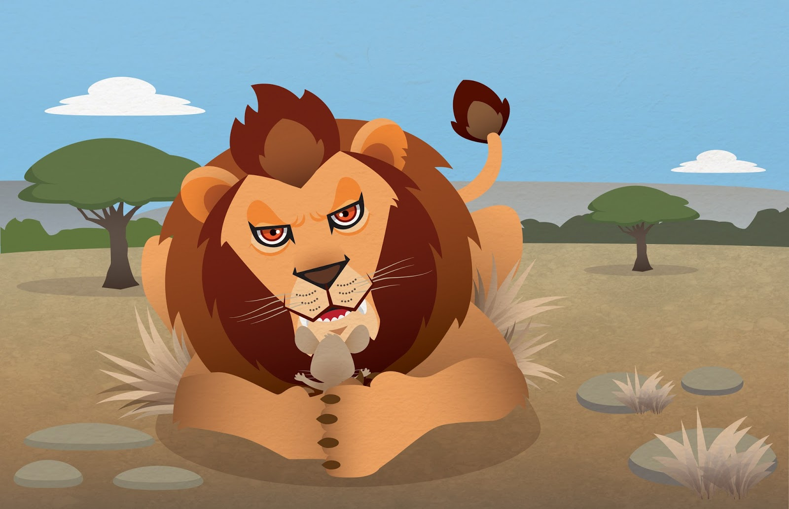

Apenas unos días más tarde, el león quedó atrapado en la red de un cazador. Desesperado, comenzó
a pedir ayuda a los gritos. El ratón, que se encontraba por allí, reconoció su voz y salió corriendo a
asistirlo. Con sus filosas paletas, rompió la red que lo envolvía y lo liberó.
